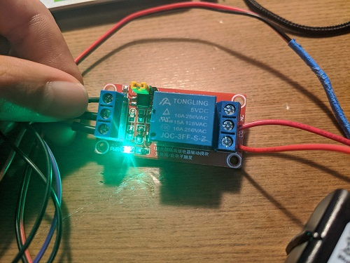
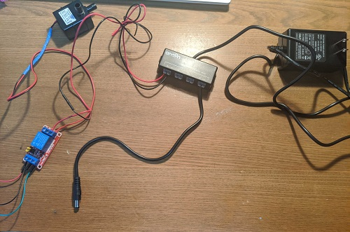
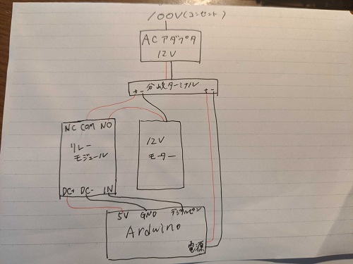

ArduinoやM5stackなどのマイコンは、５Vや３V、しか扱えず12Vや交流100Vなどを扱えない。
リレーモジュールを使用することで消費電圧の大きな機器をArduinoやM5stackで制御することができる。

12VのモーターのON,OFFの制御が可能になる
3Vや5Vより大きい電圧を扱うためには、外部電源が必要となる。
外部電源を用いることで5Vより大きい機器を扱えるようになる。


リレーモジュールのNC,NOとは、NCはNormally Closedの略で電流を流さない状態でON
NOとはNommaly Openの略で電流が流れるとON、のことらしいです。